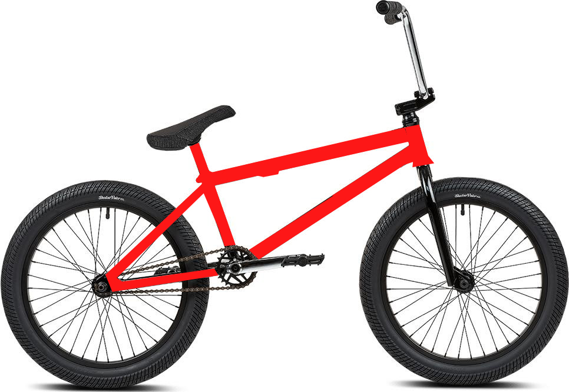
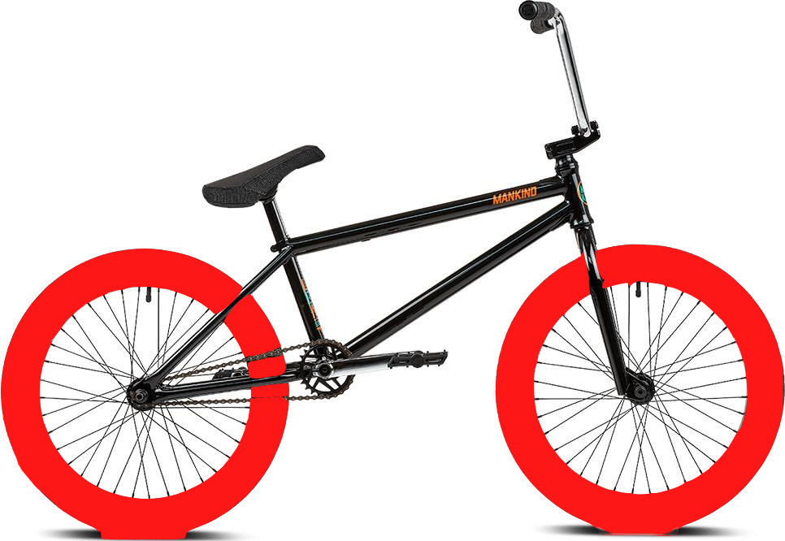
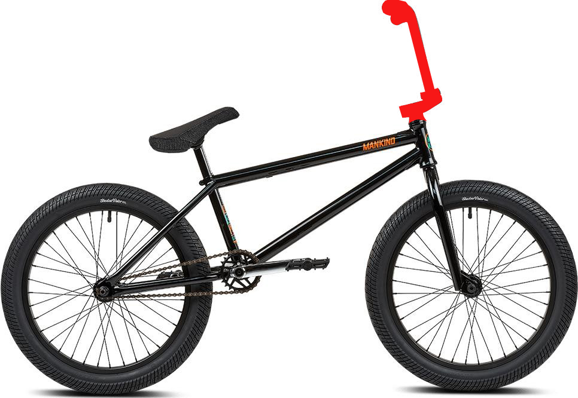
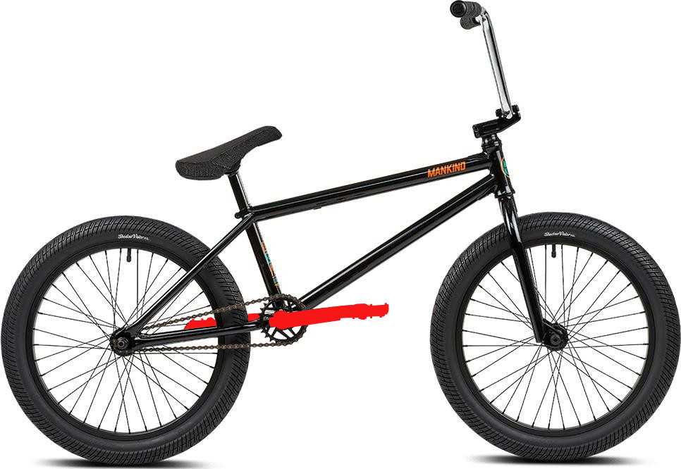
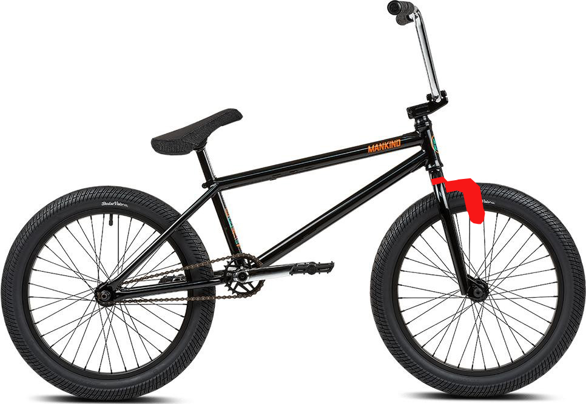
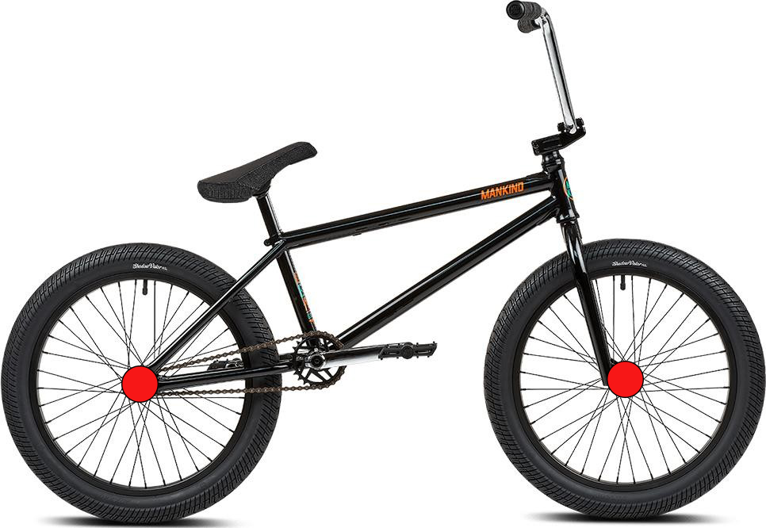

| Описание | Фото |
|---|---|
| Рамы для BMX делаются из расчёта на прочность в сочетании с лёгкостью, поэтому рама BMX имеет очень простую и надёжную конструкцию: два треугольника с общим основанием, крепления для втулки (дропауты), которые могут иметь большую площадь и толщину. Для увеличения прочности используется «батинг» или сварка дополнительных косынок в задние перья рамы и иногда между главными трубами. Дешёвые рамы для BMX’а делаются из нелегированной стали, а более дорогие — из легированной стали (с добавлением хрома и молибдена), реже из титана или алюминия (последний материал используется для рам BMX-racing). В технологии изготовления рам применяют «баттинг» — вытягивание ещё горячих труб. В итоге в местах нагрузки трубы более толстые, а где её мало — тоньше. Вытягивание может быть многоэтапным. |  |
| Колёса на BMX имеют размер 20 дюймов, но встречаются и совсем «детские» версии 16 дюймов. Обода имеют широкий «коробчатый» профиль, бывают одинарные, двойные или даже тройные, большинство предназначено для использования с ободными тормозами. Спицовка может быть 48 (в 4 креста, устарело) или 36 (3 креста) спицами. Покрышки как правило слики или полуслики в зависимости от дисциплины, шириной 1,8 — 2,50 дюйма. Рекомендуемое давление в камерах 3-7 атм (300—700 кПа). |  |
| На руле ВМХ, как правило, есть кроссбар (англ. crossbar) — перекладина посередине, повышающая прочность руля. Руль может быть сделан двухэлементным и более. Самые популярные рули — двухэлементные (из двух труб) и четырёхэлементные (соответственно, из четырёх). На концах руля, как правило, устанавливаются (натягиваются) грипсы — ручки для повышения сцепления рук с рулем. Для того чтобы грипсы не спадали, а также чтобы при падении велосипеда не повреждался руль, на него устанавливаются баренды — заглушки по обеим сторонам руля, бывают с винтами или свободно заходящие — нейлоновые. Деталь, которая соединяет руль с вилкой. Выполняется в основном из цельного куска алюминия. Существуют три различные вариации выноса: frontload, topload, upload |  |
| Педали для BMX делаются из алюминия, магния или пластмассы. Магниевые педали легче алюминиевых, но более дорогие. Пластиковые педали самые лёгкие, но менее надёжные и имеют худшее сцепление в отличие от алюминиевых или магниевых. На дешёвых педалях обычно стальная ось и насыпные подшипники, на дорогих ось делается из хромомолибденового сплава и установлены промышленные подшипники. На некоторых педалях шипы ввинчиваются шестигранником. Также существуют педали с подшипниками скольжения (Odyssey JC\PC). |  |
| Тормоза. Расположение тормозной системы на раме идёт из расчёта на то, что при кручении руля или рамы вокруг него, тросики тормоза не будут запутываться и терять свою эффективность. В связи с этим, тросик переднего тормоза идёт внутри вилки, а в тормозе на заднее колесо используется специальный механизм — гироротор. Этот элемент расположен на рулевой колонки и представляет собой подшипник с креплениями для тормозных тросиков. На тросиках, до и после гироротора применяются разветвители: первый раздваивает (бочка) тросик, а второй — объединяет (бочка) их в один. Таким образом, на гироротор идёт два тросика, расположенных по разным краям, делая нагрузку на него равномерной. Иногда вместо гироротора и разветвителей ставят один длинный тросик, причём такой длины, чтобы руль мог свободно сделать один или несколько полных оборотов. Некоторые BMX райдеры предпочитают вообще не ставить тормозов в целях снижения веса велосипеда или в зависимости от стиля катания. |  |
| Втулки велосипедисты, выполняющие много скольжений на пегах, надевают специальные «щитки» на передние и задние втулки — «хабгарды» (англ. Hubguard, hub — втулка, guard — защитник)". Они предотвращают стирание фланцев втулки и спиц во время скольжения на пегах. Передняя втулка Корпус втулки в основном выполняется из алюминия. Во втулках для BMX применяются два закрытых промышленных, или насыпных подшипника. Втулка чаще всего имеет ось 10 мм, реже — 14 мм. Наиболее популярен вариант, когда втулку на вилке держат болты, ввинчивающиеся в ось. Втулка рассчитана на 36 спиц, всё реже — на 48. Задняя втулка Корпус задней втулки, как и передней, чаще всего выполняется из алюминия[2], но может выполняться и из титана. Заднии втулки имеют ось 14 и 10 мм, и могут держатся на раме гайками или болтами. Втулки бывают левосторонние и правосторонние. Задние втулки различают по сторонам свободного хода: в одну сторону (с использованием храпового механизма) и в две стороны (т. н. «фрикостеры» (англ. Freecoaster, free — свободно, coast — двигаться накатом). Фрикостер позволяет не крутить педали назад при езде задним ходом (Fakie). |  |